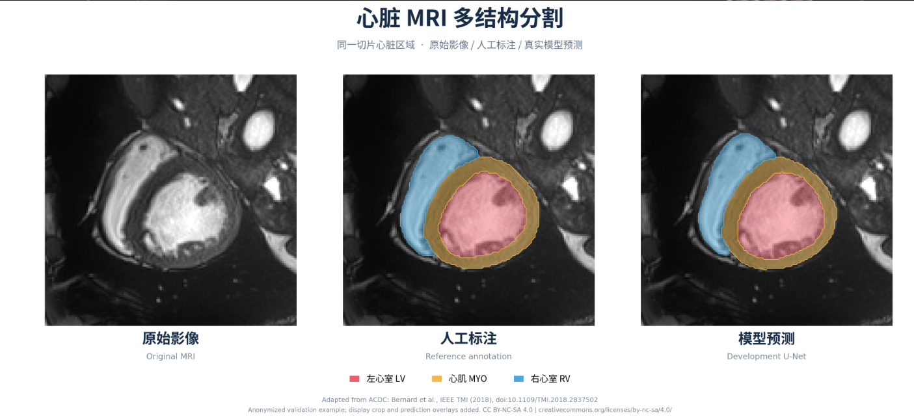

分割结果示例


研究背景
心脏 MRI 可以用来观察心室和心肌的结构。要从图像进一步估算心室容积与射血分数，需要先准确地识别这些结构。心肌薄壁或心室边界分得不够细，都可能影响后续量化。
我做了什么
- 用 Python 和 PyTorch 搭建分割实验框架，统一数据预处理、空间几何对齐、训练、推理和评价流程。
- 按患者划分数据，实现左心室、右心室与心肌的自动分割，在 ACDC 数据集上完成五类模型的首轮基准训练与验证。
- 围绕改良 U-Net 探索内容感知上采样和多尺度语义融合，进行结构筛选和模块对照分析。
评估与当前进展
用 Dice 查看预测与标注的重叠程度，用 HD95 查看边界距离，并结合逐病例误差分析定位典型失误。流程支持预测可视化和实验报告导出，已开发心室容积和射血分数计算原型。